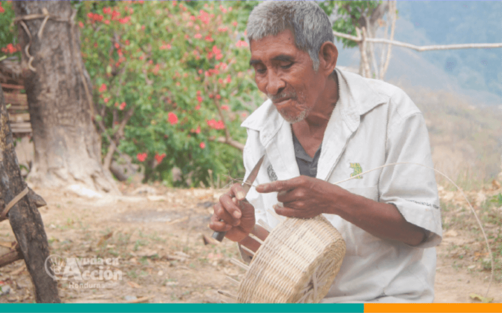
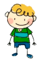

<!--
  Generated template for the Pagina1Page page.

  See http://ionicframework.com/docs/components/#navigation for more info on
  Ionic pages and navigation.
-->
<ion-header>

  <ion-navbar color="primary">

    <ion-buttons>
      <button ion-button
              icon-only menuToggle>
        <ion-icon name="menu"></ion-icon>
        <ion-title  text-center>Guia N°5</ion-title>
        
      </button>
      <!--  -->

    </ion-buttons>
  </ion-navbar>

</ion-header>


<ion-content>

  <ion-card>
    
    <ion-card-content>

      <h1 text-center>Elementos complementarios<br>de las operaciones<br><hr></h1>


      <!-- <ion-card-title>
        Nine Inch Nails Live
        </ion-card-title>
      <p>
        The most popular industrial group ever, and largely
        responsible for bringing the music to a mass audience.
      </p> -->

      <ion-list>


  <ion-list>
    <ion-item (click)="irguia5a1()">
      <ion-avatar item-start>
        
      </ion-avatar>
      <h2>Conceptualización  relevante</h2>
      <!-- <p>Ugh. As if.</p> -->
    </ion-item>
  </ion-list>

  <ion-list>
    <ion-item (click)="irguia5a2()">
      <ion-avatar item-start>
        
      </ion-avatar>
      <h2>Modelos de rendición <br> de cuentas</h2>
      <!-- <p>Ugh. As if.</p> -->
    </ion-item>
  </ion-list>
  <ion-list>
    <ion-item (click)="irguia5a3()">
      <ion-avatar item-start>
        
      </ion-avatar>
      <h2>Comunicación del <br> modelo comunitario</h2>
      <!-- <p>Ugh. As if.</p> -->
    </ion-item>
  </ion-list>
  <ion-list>
    <ion-item (click)="irguia5a4()">
      <ion-avatar item-start>
        
      </ion-avatar>
      <h2>Tomas de fotografías <br> con calidad</h2>
      <!-- <p>Ugh. As if.</p> -->
    </ion-item>
  </ion-list>
</ion-list>
    </ion-card-content>
  </ion-card>

</ion-content>
